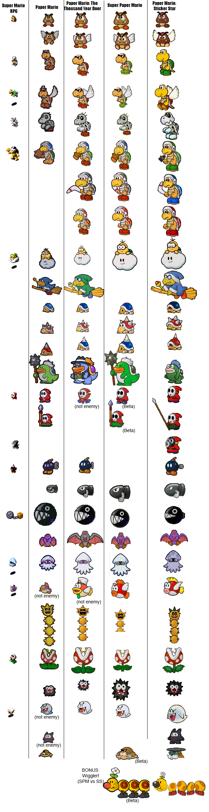

Here we will analyze the art evolution in of the Paper Mario franchise. In addition to what changes, you may find just as interesting what does not! Why does change occur? Here are a few reasons: In more recent times it seems clear that Nintendo prefers overall 'consistent' character design in their main series and spin off games. Some fans may call this 'New Super Mario Bros' style, but the 2005 Nintendo DS game did not actually start this trend. Since these characters are around thirty years old Nintendo would not likely experiment too wildly with the design anyway. Nintendo also now gives more characters the 'Toad' or 'Koopa' treatment. A generic enemy (any non-human aside from the Donkey Kong family) is presented as a species name composite character. (This is not new and goes back to Super Nintendo Entertainment System games but now there are more main-ish but generic characters to be found in newer games).
Now let's get to the thick of things. Some fans might wonder why even small amounts of departure is not allowed anymore in the Paper Mario games. What exactly are those design tweaks such fans yearn for? Let's look at the below.
Note: The above features Super Mario RPG sprites. We can ignore those.
Mario: In 64 he has a simplified style to fit in with 'story book'. There are differences between his art and in game sprites. In TTYD he’s redesigned to look like how we think of Paper Mario today. SPM keeps that but it is a slightly sharper image. Sticker star changes only the smallest thing, like his gloves and adds a felt like texture to him, but only in concept art. Color Splash adds the white outline. It is worth nothing that he has new animations depending on the game, such as dancing in the newer games. There are some subtle tweaks. So much you wonder why bother.
 |
 |
|---|---|
 |
Peach: A close story to Mario. Later we get small differences in dress for example.(See bottom image)
Bowser: He might have some of the least changes spanning across all the games. He was pretty stylized from the start with a consistent appearance until Sticker Star and Color Splash added detail to his spikes. Paper Jam however the spin off reverts to his old look surprisingly, and yes that game is post-old Paper Mario so I wonder why they did that.
Luigi: His design cycle is just like Mario’s.
Goomba: Stylized in PM64 and cleaned up just a bit for TTYD and SPM. SS darkens their skin, thins out their eyebrows to match 3D renders of the mushroom enemies and doesn’t exaggerate the eyes as much.
Paragoomba: Same.
Koopa: Ahh! My eyes. Sorry, I was dazed for a moment because I lost my shades. In all fairness, the glasses in the older games meant that they were ‘bad’ koopas, or in SPM case, the ones that worked for Count Bleck.

Dry bones: This is where things get drastic. The completely stylized Dry bones is changed to a design that pretty much perfectly resembles their 3D game render. A bit disappointing.
Hammer bro, boomerang bro, fire bro: Another casualty of the 'NSMBization'. Their snouts are shortened like their 3D versions. For Hammer bro the color of his helmet is made to match. Their eyes are less cartoony and they just seem a bit more serious.
Lakitu: Stays very very close. Suspiciously so! I don’t trust those jerks!
Magikoopa/ Kamek: Remains close. Remember that SS has no magikoopa enemy but Kamek, except Kamek has always appeared to be a generic blue magikoopa. (And yes in Japan Kamek and Magikoopa can be synonymous.)
Buzzy beetle: Another drastic one with a distinctive Paper Mario only style that was stripped away in Sticker Star to look just like NSMB. It was always a little strange that the old design as one toe nail on the entire foot..
Spiny: Just like above.
Spike top: Again like above.
Clubba/ Spike: Clubbas are in the older games but the newer only have Spike. We can’t make a comparison yet.
Shy guy and variants: Somehow manage to remain the nearly same.
Bob-omb: Literally stays the same!
Bullet Bill: Loses some cartoony features like larger eyes and given more detail around the arm.
Chain Chomp: Remains close enough.
Swooper: Literally stays the same.
Blooper: Literally stays the same.
Cheep-cheep: Remains close enough.
Pokey: Loses exclusive ‘ghoulish’ Paper Mario style for their modern ‘chippy’ 3D design.
Piranha plant: Almost the same except detail on the leaves. Also whiter teeth, so someone gifted it some dental care at some point.
Fuzzy: Remains close enough, including the crooked eyes. (This is worth noting because other enemies with strabismus like Whomps have that design element stripped in modern times.)
Boo: Loses exclusive and stylized Paper Mario style for what’s basically a 2D version of Boo’s modern 3D sprite.
Ninji: Close but less cartoony.
Rocky wrench: A comparison here isn’t exact but notice that they lose the distinctive Paper Mario glasses. However the style is noticeably cartoony still.
Wiggler: A story you’ve heard before. He sheds the stylization to look straight out of NSMB.
Now let's discuss some more general attributes. You may notice that some characters do get a unique appearance but others not.